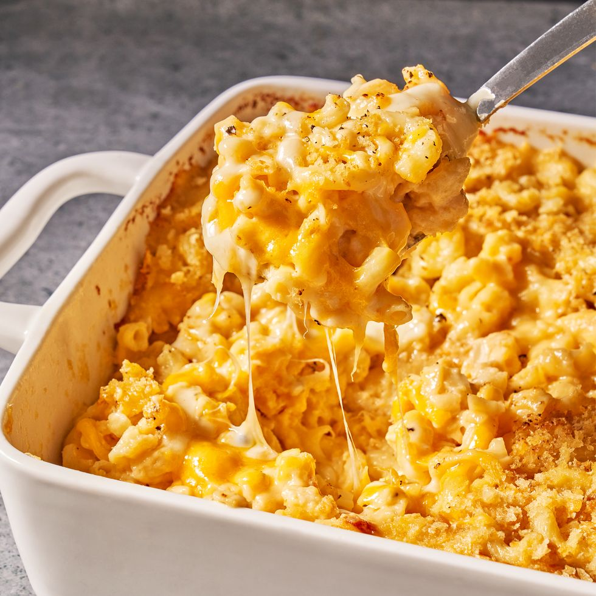

Homemade Mac & Cheese

Description:
Who doesn't love a good classic? This mac and cheese is perfect for any occasion. It is satisfyingly creamy, cheesy, and has a golden, crunchy topping.
Ingredients:
- 1/2 c. (1 stick) butter, plus more for baking dish
- Kosher salt
- 1 lb. elbow macaroni
- 1/2 c. all-purpose flour
- 5 c. whole milk
- 1 tsp. mustard powder
- Freshly ground black pepper
- 12 oz. shredded cheddar (about 3 c.)
- 8 oz. shredded Gruyere (about 2 c.)
- 3 oz. finely grated Parmesan (about 1 1/2 c.), divided
- 1 c. panko bread crumbs
- 3 tbsp. extra-virgin olive oil
Directions:
- Preheat oven to 375 degrees F. Grease a 13"x9" baking dish with butter. In a large pot of boiling salted water, cook macaroni, stirring occasionally, until al dente, 5 to 6 minutes, Drain.
- In a large saucepan over medium heat, melt 1 stick butter. Sprinkle flour over and cook, stirring, until slightly golden, 2 to 3 minutes. Pour in milk and whisk until combined. Add mustard powder; season with salt and pepper. Bring to a simmer over medium-high heat and cook, stirring, until sauce starts to thicken, about 2 minutes.
- Remove pan from heat and whisk in cheddar, Gruyere, and 1 cup Parmesan until melted and smooth. Stir in macaroni and transfer to prepared dish.
- In a small bowl, combine panko, oil, and remaining 1/2 cup Parmesan. Sprinkle over macaroni; season with more pepper.
- Bake mac and cheese until bubbly and golden, 25 to 30 minutes. Let cool 10 minutes.